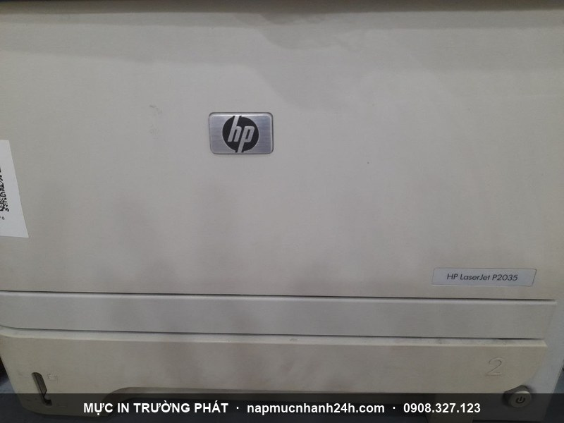
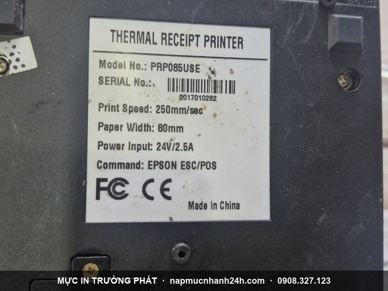

Nạp mực máy in quận Bình Tân tận nơi - Có mặt trong 30 phút
Mực In Trường Phát chuyên nạp mực máy in tận nơi tại quận Bình Tân với 9 năm kinh nghiệm. Đội ngũ kỹ thuật đặt sẵn theo các tuyến Tỉnh Lộ 10, Khu Tên Lửa, Lê Văn Quới, Mã Lò, Trần Văn Giàu, Quốc lộ 1A — rút ngắn thời gian di chuyển còn 20-30 phút.
Máy in laser đen trắng nạp tại nhà chỉ 90.000đ, in test trước khi tính tiền, bảo hành 1 tháng. Hỗ trợ 24/7 kể cả cuối tuần và lễ.
📞 Gọi ngay - Kỹ thuật có mặt trong 30 phút:
0908.327.123 · 0819.007.394 (Zalo cả 2 số)
Bảng giá nạp mực máy in tại quận Bình Tân

Giá đã bao gồm công thợ + mực chính hãng + di chuyển nội thành quận Bình Tân. Máy không có trong bảng vui lòng gọi 0908.327.123 để báo giá chính xác.
Máy in laser đen trắng (HP, Canon)
| Dòng máy | Giá |
|---|---|
| HP Laser 1010-3050 / Canon 2900, 3000 | 90.000đ |
| HP Laser 1100-3300 series, MFP 3380 / Canon LBP 1210, 3300 series | 90.000đ |
| HP Laser P2010-2055 series / Canon LBP 6300, 6650, MF5840dn, 3310, 3370 | 90.000đ |
| HP Laser P1005-P1505n, M1132, 1212nf / Canon LBP 3100-3250, 4550, 4580DN | 90.000đ |
| HP 1102, P1120W, M1132 | 90.000đ |
| HP Laser 2410, 2420, 2430 series | 150.000đ |
| HP A3: 5200L, HP 5200/n/tn/dtn / Canon LBP 3500 (16A) | 240.000đ |
Máy in Samsung, Xerox, Brother, Panasonic
| Dòng máy | Giá |
|---|---|
| Samsung ML1210-1750, SF560-750, 2150-2252, 4200-4720 / SCX 4016-4720D5, 4300 | 120.000đ |
| Xerox 3115-3130, 3117, Dell, Worcenter PE16 / Lexmark X215 | 120.000đ |
| Xerox 203A, 204 | 160.000đ |
| Brother HL2030-2170, 5240-5280 / MFC 7210-8870 series | 140.000đ |
| Brother E321-352DN | 120.000đ |
| Panasonic KX-FLB / KX-FL / KX-MB series | 150.000đ |
Máy in laser màu, máy in phun, hệ thống mực liên tục
| Loại | Giá |
|---|---|
| Laser màu (HP, Canon, Brother, Oki) | 250.000 - 450.000đ / màu |
| Máy in phun (HP, Canon, Epson, Brother) | 40.000 - 80.000đ / màu |
| Hệ thống mực in liên tục bộ 4 màu (gồm chip + công lắp) | 550.000đ |
| Hệ thống mực in liên tục bộ 6 màu | 700.000đ |
| Mực nước 80ml | 60.000đ / màu |
| Mực dầu 80ml | 120.000đ / màu |
Quy trình nạp mực 7 bước tận nơi
Tiếp nhận yêu cầu
Gọi hotline / Zalo, xác nhận địa chỉ + model máy.
Có mặt 30 phút
Kỹ thuật khu vực quận Bình Tân di chuyển trong giờ hành chính.
Kiểm tra + báo giá
Mở máy, kiểm tra hộp mực + drum, báo tình trạng.
Tháo + vệ sinh
Tháo hộp mực, vệ sinh trống, gạt, rotor sạch sẽ.
Đổ mực + reset chip
Đổ mực đúng dòng, reset chip nếu cần (laser màu, Brother).
In test 3-5 trang
In test kiểm tra nét, đầy chữ, không sọc, không lem.
Thu tiền + bảo hành
Chỉ thu tiền khi khách hài lòng. Bảo hành 1 tháng.
Vì sao 1.000+ khách quận Bình Tân chọn Trường Phát?
✓ 9 năm kinh nghiệm
Chuyên nạp mực + sửa chữa máy in từ 2017. Phục vụ hơn 1.000 doanh nghiệp văn phòng tại quận Bình Tân.
✓ Kỹ thuật khu vực
Đội ngũ riêng cho quận Bình Tân - đặt theo tuyến Tỉnh Lộ 10, Khu Tên Lửa, Lê Văn Quới.
✓ Mực chính hãng
Nhập từ nhà phân phối uy tín. Có hoá đơn VAT cho doanh nghiệp xuất hoá đơn.
✓ In test trước khi tính tiền
Anh chị xem bản in trước. Không hài lòng - không thu tiền. Cam kết bằng văn bản.
✓ Bảo hành 1 tháng
Trong 30 ngày nếu in mờ, sọc, đứt chữ - Trường Phát đến xử lý lại miễn phí.
✓ Hỗ trợ 24/7
Kể cả thứ 7, chủ nhật, lễ. Phụ phí ngoài giờ minh bạch, báo trước qua Zalo.
Khách hàng quận Bình Tân nói gì về Trường Phát?
"Cty mình ở Khu Tên Lửa, kho hàng cần in vận đơn liên tục. Máy HP P2035 hết mực, gọi 8h, 8h20 kỹ thuật tới. Nạp xong in 100 trang vẫn nét."
"Tiệm in ấn nhỏ nhà mình ở Mã Lò, máy laser màu HP M252 hết toner đen. Trường Phát qua reset chip + nạp 1 màu giá đúng 250k."
"Máy Brother HL-L2321D báo Replace Drum. Trường Phát reset đèn + nạp mực, mình dùng tiếp 4 tháng nữa mới phải thay drum thật. Tiết kiệm tiền."
Câu hỏi thường gặp
Mất bao lâu để kỹ thuật có mặt tại quận Bình Tân?
Trong giờ hành chính (8h-17h) trung bình 20-30 phút tại các tuyến Tỉnh Lộ 10, Khu Tên Lửa, Lê Văn Quới. Giờ trưa hoặc cuối tuần có thể 30-45 phút tuỳ tuyến.
Máy in laser màu có nạp tại nhà được không?
Có. Kỹ thuật mang đầy đủ mực 4 màu (CMYK) + chip reset + dụng cụ vệ sinh. Thời gian xử lý 30-45 phút/máy. Giá 250.000-450.000đ/màu tuỳ dòng.
Bảo hành như thế nào?
Bảo hành chất lượng mực 1 tháng kể từ ngày nạp. Trong thời gian này nếu in mờ, sọc, đứt chữ, lem mực - Trường Phát đến xử lý miễn phí.
Doanh nghiệp có hoá đơn VAT không?
Có. Trường Phát xuất hoá đơn VAT cho mọi giao dịch của doanh nghiệp. Vui lòng cung cấp MST + tên cty + địa chỉ khi đặt dịch vụ.
Có dịch vụ ngoài giờ không?
Có. Hỗ trợ 24/7 kể cả thứ 7, chủ nhật, lễ tết. Phụ phí ngoài giờ 30.000-50.000đ/lần đi tuỳ thời điểm, báo trước qua Zalo.
Máy bị kẹt giấy / không in được, có sửa luôn không?
Có. Trường Phát còn nhận sửa máy in tận nơi - kẹt giấy, đèn báo lỗi, thay drum, thay rotor, thay fuser. Xem dịch vụ sửa máy in →
Các dịch vụ liên quan
- Sửa máy in tận nơi TP.HCM - kẹt giấy, đèn báo lỗi, thay drum, fuser
- Nạp mực laser màu - HP, Canon, Brother, Oki
- Quận lân cận: Quận 6, Tân Phú, Quận 11, Bình Chánh
Cần nạp mực ngay tại quận Bình Tân?
Trường Phát - 30 phút có mặt - Chỉ 90.000đ máy laser đen trắng - Bảo hành 1 tháng

Liên hệ Trường Phát quận Bình Tân
- Hotline 1: 0908.327.123 (Zalo · Telegram)
- Hotline 2: 0819.007.394 (Zalo · Telegram)
- Hoạt động: 24/7 kể cả lễ tết
- Phục vụ: Toàn bộ quận Bình Tân + giáp ranh Quận 6, Tân Phú, Quận 11, Bình Chánh